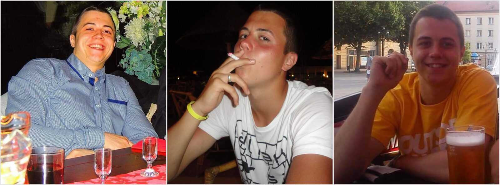
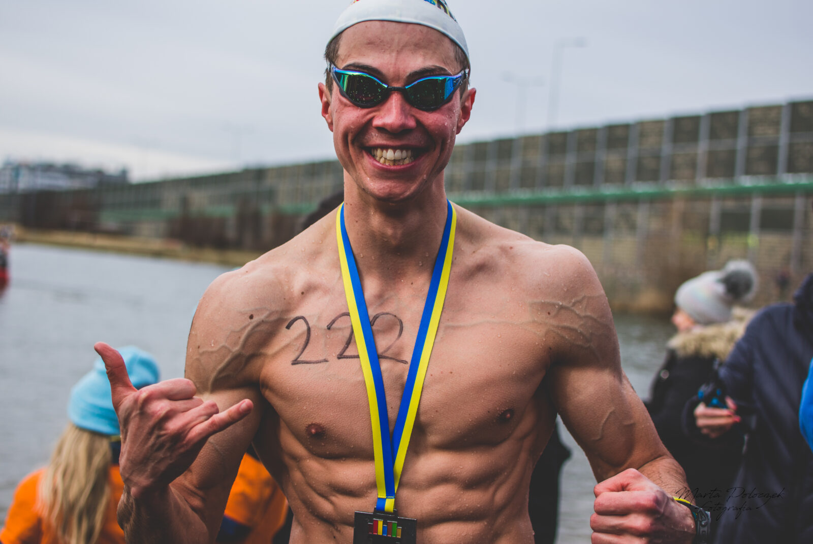
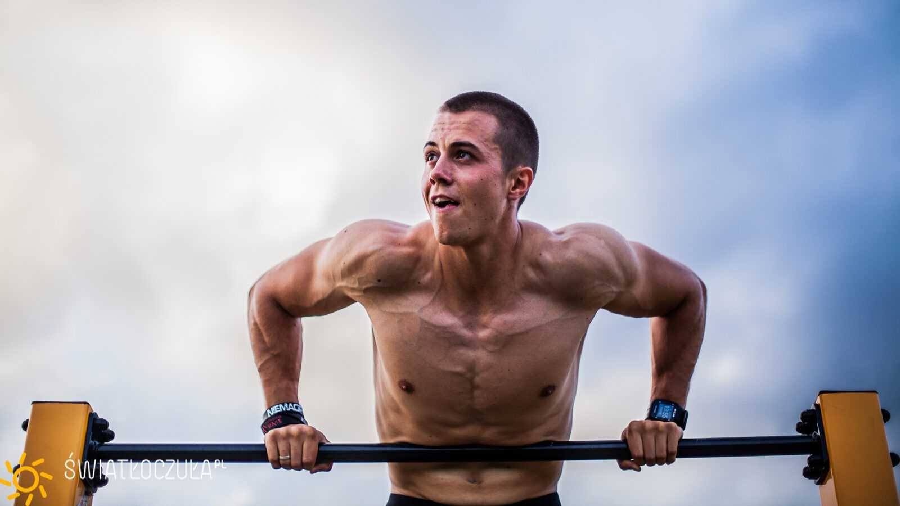
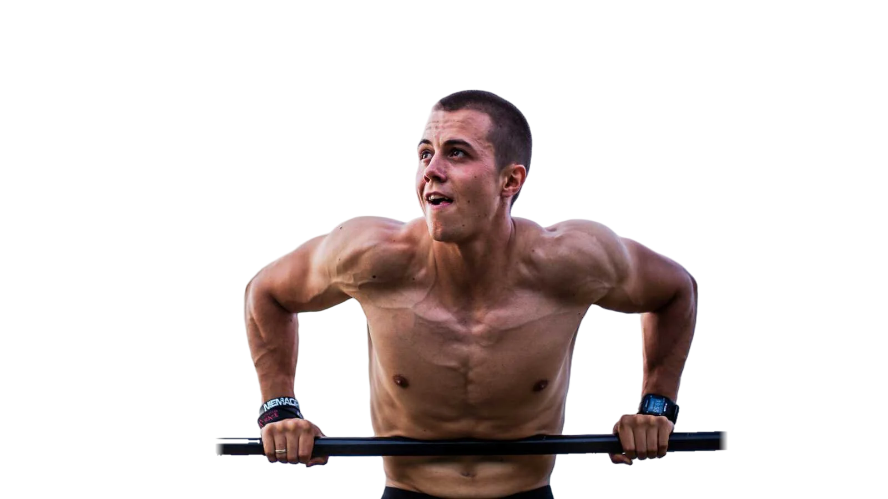
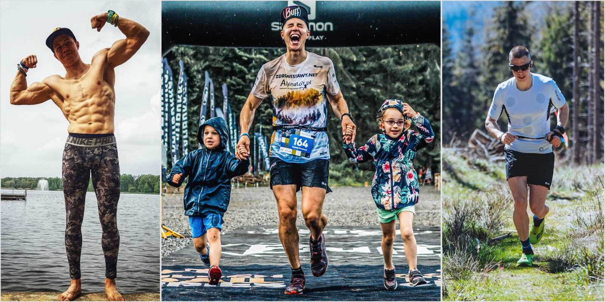
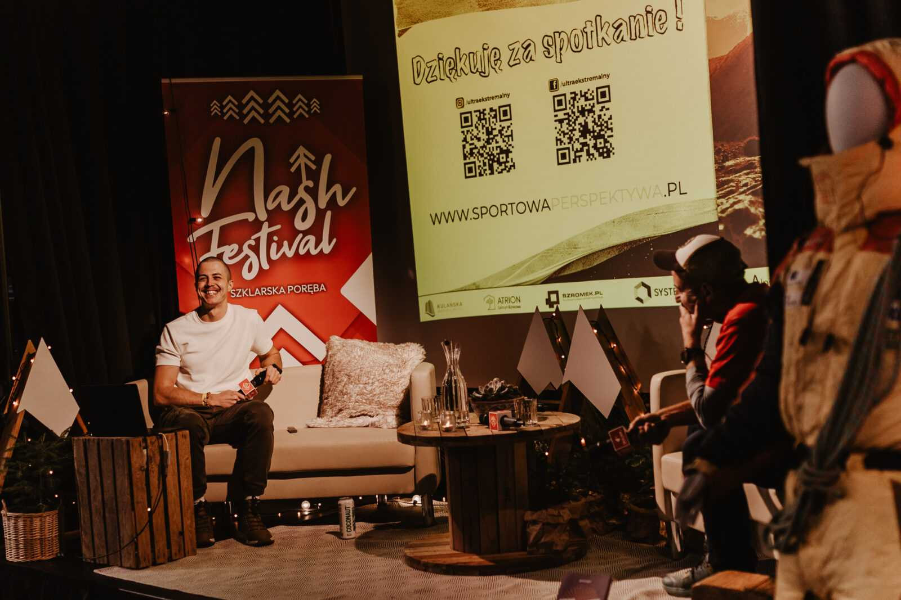

Poznaj moją historię
Moja opowieść zaczyna się inaczej.
Nie jestem sportowcem, który od najmłodszych lat konsekwentnie dochodził do formy. Do sportu wszedłem z rachunkiem solidnego debetu i wielu deficytów.
Szkoła podstawowa, 2005
Woda była pierwsza.
Przygodę z pływaniem zacząłem jako dziecko, w czwartej klasie szkoły podstawowej. W 2005 roku zdobyłem stopień młodszego ratownika wodnego.
Wtedy nie wiedziałem jeszcze, że po latach wrócę do wody jako zawodnik, instruktor i reprezentant Polski.
Do 2017 roku
Lata, o których mówię otwarcie.
Trudno mówić o wchodzeniu w sport od zera, kiedy w wieku 10 lat zaczynasz palić papierosy, w wieku 13 lat pić alkohol, a mając 16 lat pierwszy raz sięgasz po twarde narkotyki.
- 10papierosy
- 13alkohol
- 16narkotyki
Przez naście lat 95% moich dni wypełniała mieszanka alkoholu, narkotyków, paczki fajek, śmieciowego jedzenia i niekończących się imprez. Setki razy próbowałem coś zmienić. Dziesiątki razy dostawałem od życia jasne komunikaty, które powinny kończyć się tragedią, a kończyły się kolejną szansą.
95 na 100 dni

Dla mnie przeszłość to nie temat tabu, a narzędzie, które świadomie wykorzystuję, by inspirować innych. Ówczesna słabość stanowi dzisiejszą siłę.
10.09.2017
To pierwszy dzień mojego drugiego, trzeźwego życia, które nieprzerwanie trwa do dziś.
3296 dni

Pierwszy półmaraton przebiegłem jeszcze w 2016 roku w Tychach. Rok później stanąłem na starcie Maratonu Warszawskiego, na łyso i w stroju Supermana, zbierając pieniądze dla wcześniaków.
W latach 2017–2018 skompletowałem Koronę Maratonów Polskich: Kraków, Warszawa, Dębno, Wrocław i Poznań. W 2018 roku odkryłem kalistenikę i trening z masą własnego ciała.
„Nieważne, skąd pochodzisz. Ważne, dokąd zmierzasz.”
„Dlatego lubię wierzyć, że cuda już za mną, a teraz tylko praca i cierpliwe wypatrywanie plonów po pokornym okresie sadzenia ziarenek.”
2019–2024
Woda i lód.
W 2019 roku wygrałem 12-godzinny maraton pływacki Otyliada i zostałem licencjonowanym instruktorem pływania. Rok później wygrałem 24-godzinny maraton pływacki w Kazimierzy Wielkiej, z nowym rekordem najstarszej takiej imprezy w Polsce: 1724 długości basenu, 43,1 km. W tym samym roku, w debiucie, zdobyłem złoto Mistrzostw Polski w lodowym pływaniu na 100 m.
Na Mistrzostwach Świata IISA w Głogowie w 2022 roku zdobyłem trzy srebra (50, 100 i 250 m stylem dowolnym) i brąz na 50 m stylem motylkowym. Rok później w Samoëns dołożyłem srebro na 250 m i brąz na 100 m motylkiem. Wszystkie w kategorii wiekowej. W 2024 roku reprezentowałem Polskę na Mistrzostwach Europy.


W lutym 2024 roku przez dobę pływałem w Wodnym Parku Tychy dla dzieci z hospicjum Świetlikowo: 51,15 km, ponad 41 tysięcy ruchów rąk, 16 tysięcy wdechów i tysiąc nawrotów. Rekord życiowy poprawiłem o ponad 8 kilometrów.
2022
Wypowiedzenie.
W 2022 roku zostawiłem pracę na etacie. Narosła we mnie ogromna, nienegocjowalna potrzeba i szacunek do tego, ile sport dobrego uczynił w moim życiu. Z dnia na dzień napisałem wypowiedzenie i głośno powiedziałem: chcę ze sportem związać życie zawodowe.
Wcześniej przez lata godziłem treningi z pracą handlowca.


„Pamiętam, jak wstawał o godzinie 3:45 w zimę, by zrobić biegowy trening na mieście; dalej o godzinie 6:00 miał już drugi trening, by na 8:00 dojechać rowerem do pracy.”
2022–2025
Góry.
W 2022 roku razem z Krzysztofem Kościelnikiem ruszyliśmy Głównym Szlakiem Beskidzkim dla Fundacji Słonie na Balkonie, która wspiera leczenie depresji u dzieci. Po 170 kilometrach zatrzymały mnie przeciążone kolana. Krzysiek dokończył szlak, a zbiórka zamknęła się kwotą 35 301 zł.

W sierpniu 2023 roku zdobyłem biegiem Koronę Gór Polski: 28 szczytów, od Tarnicy do mety 11 sierpnia. Między szczytami przejechałem 2400 km autem i spałem 14,5 godziny. Kilka tygodni później wróciłem na Główny Szlak Beskidzki, tym razem z Wołosatego do Ustronia: 500 kilometrów dla 13-miesięcznej Natalki.
W sierpniu 2024 roku przebiegłem Mały Szlak Beskidzki bez żadnego wsparcia, w 20:45:56. W październiku ruszyłem z Bielska-Białej na Wielką Pętlę Beskidzką, trasę, którą zwykle idzie się 8–10 dni.

W sierpniu 2025 roku przebiegłem Główny Szlak Sudecki dla dwuletniej Nikusi: 445 km i 14 181 m w górę, z łącznie około 100 minutami snu. To trzeci najszybszy czas w historii szlaku. Po drodze zjadłem około 120 pierogów i wypiłem 8 litrów rosołu.
2024–2026
2×Harda.
W 2024 roku ukończyłem HardaSuka Ultimate Triathlon, najtrudniejszy triathlon w Europie, w 23 godziny i 15 minut, na piątym miejscu w debiucie.
Rok później, 13–15 czerwca 2025, jako pierwszy w historii pokonałem go na podwójnym dystansie: 10 km pływania w Jeziorze Orawskim, 480 km na rowerze i 110 km biegu przez Tatry. 16 000 metrów w górę, ponad 65 godzin od wejścia do wody i dwie krótkie drzemki. Zbiórka dla Fundacji Szerpowie Nadziei zebrała 93 160 zł.
Z tej drogi powstał film „2 Hard Road 2 Walk Alone. Zbyt trudna droga, by iść nią samemu”, nagrodzony Nagrodą Główną 16. Przeglądu Filmów Górskich w Wadowicach. Nagrodę otrzymał tam też film „The Loop: Wielka Pętla Beskidzka”.

„Najpiękniejsze uczucie, to bycie wartością dla innych.”
Rodzina
Nade wszystko jednak szczęśliwy mąż, tata, wizjoner, życiowy optymista.

„…największe zwycięstwo mam już za sobą, a cokolwiek dalej spotkam, nie będzie warte więcej niż zdrowie, rodzina, przyjaźnie, relacje, świadomość, wiara, wdzięczność i pasja, które odnalazłem w ostatnich dziewięciu latach.”
2026 i dalej
Dokąd zmierzam.
Chcę zostać jednym z najbardziej unikatowych sportowców w świecie wyzwań ultra oraz ekstremalnych. Poniekąd zredefiniować na nowo słowo „ultra” w sportowym świecie.
W tej dziedzinie liczy się wytrzymałość, która rośnie i rozwija się wraz z wiekiem, a jej szczyt przypada nawet na 55. rok życia. W sporcie jestem od kilku lat. Zawodnicy w moim wieku często mają już 20-letni staż.
W 2026 roku przebiegłem 29 pętli backyardu dla dzieci z placówki Kwadrat, zająłem 2. miejsce na Tatra Fest, a 1 października o 10:00 ruszam w Backyard na Dziko: 72 godziny wokół Jeziora Paprocany dla hospicjum „Tu Się Tuli”.
„Ktoś powie niemożliwe? Ja powiem: niemożliwe i cuda już za mną.”

Niemożliwe nie istnieje.
Dalej: WyzwaniaKontakt
Napisz do mnie.
Prelekcja, szkolenie, sponsoring, wywiad albo dobre słowo przed startem.
- Telefon+48 536 251 284
- Facebook/ultraekstremalny
- Instagram@ultraekstremalny
- YouTube@ultraekstremalny
- LinkedInAndrzej Kowalczyk
- Patronitepatronite.pl/ultraekstremalny